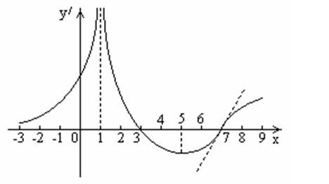
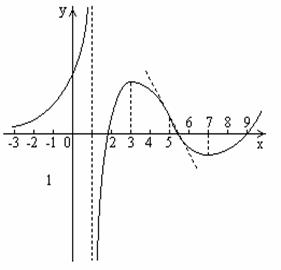

П 19.ТУ№2.
По данному графику производной  постройте вид графика функции
постройте вид графика функции  .
.
постройте вид графика функции .
Решение:
1) На интервале  ,
,  возрастает,
, т.е., скорость возрастания также неограниченно возрастает, а
следовательно, и сама функция неограниченно
возрастает, таким образом,
возрастает,
, т.е., скорость возрастания также неограниченно возрастает, а
следовательно, и сама функция неограниченно
возрастает, таким образом,  –
вертикальная асимптота графика.
–
вертикальная асимптота графика.
, возрастает,
, т.е., скорость возрастания также неограниченно возрастает, а
следовательно, и сама функция неограниченно
возрастает, таким образом, –
вертикальная асимптота графика.2) На интервале , возрастает,
причем , (чем ближе точка к – справа от нее, тем больше скорость
возрастания), что указывает, что , т.е., – точка разрыва второго рода.
, возрастает,
причем , (чем ближе точка к – справа от нее, тем больше скорость
возрастания), что указывает, что , т.е., – точка разрыва второго рода.3) В точке производная
меняет знак с «+» на «–», – точка
локального максимума.
4) На интервале  , убывает.
, убывает.
, убывает.5) В точке производная
меняет знак с «–» на «+», – точка
локального минимума.
6) При функция
возрастает.
Эти соображения позволяют построить примерный
график :
: